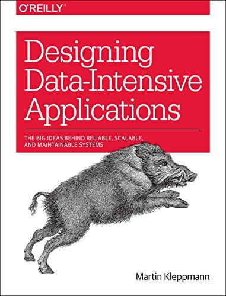
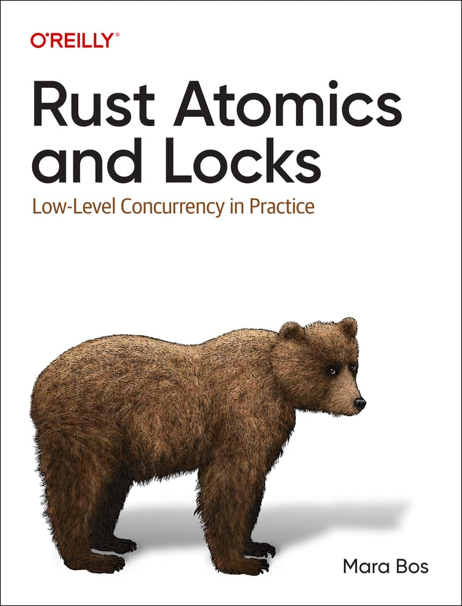

Currently Reading 2 — My Library
About
Personal Projects
Currently Reading
Currently Reading 2
Links
←
Original view
My Library
Saurabh Kaul / Books
Currently Reading 2
My current reading list
Book
Progress

Designing Data-Intensive Applications
Martin Kleppmann

Rust Atomics and Locks
Mara Bos
Rust for Rustaceans
Jon Gjengset